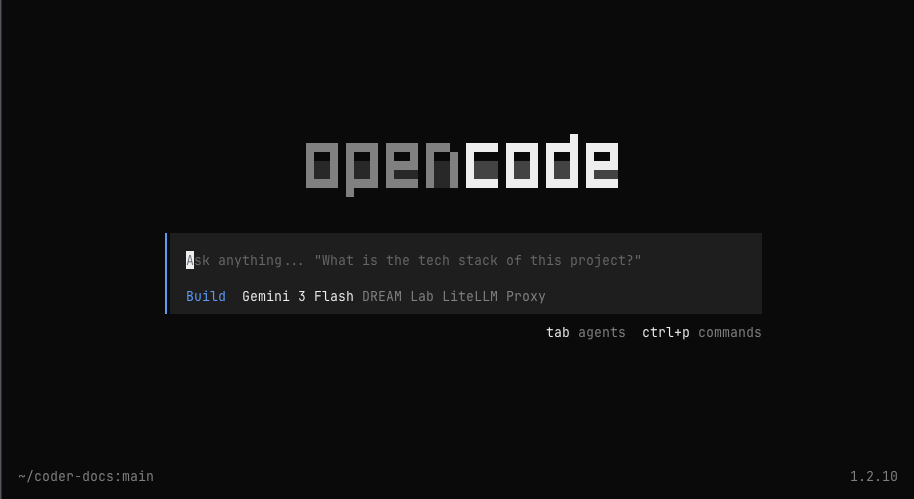

AI Gateway
The AI Gateway is an experimental feature for Coder Workspaces. An API key is required to use the gateway. Access is currently restricted to library staff.
Coder Workspaces can use an AI Gateway (LiteLLM) for API access to large language models. The gateway is only accessible from your Coder Workspace.
The gateway URL is http://litellm.dreamlab.ucsb.edu:4000
AI-Assisted Coding Tools
Most AI-assisted coding tools can be configured to use the AI gateway.
Coder workspaces provide a relatively safe way to experiment with AI coding agents, like Claude Code, Gemini CLI, or Open AI’s Codex. These tools, which generate and also execute code, can be useful but they are also inherently dangerous. “Prompt injection” attacks can trick AI tools into running nefarious code on your system. Because Coder workspaces are isolated virtual machines, the potential damage a rogue AI agent running in a workspace can cause is reduced (but not eliminated).
Claude Code
The following steps are taken from the Claude Code documentation for using a LiteLLM gateway.
1. Install Claude Code
Start the terminal and install Claude Code if necessary:
curl -fsSL https://claude.ai/install.sh | bash2. Configure Claude Code
You need to set three environment variables so Claude Code can connect to authenticate with the AI gateway. You can add these to the bottom of your ~/.bashrc file so they take effect automatically when you start the terminal.
Open ~/.bashrc in a text editor:
nano ~/.bashrcScroll to the bottom of the file and add the following lines. Replace "YOUR_API_KEY..." with the key you received from DREAM Lab staff.
export ANTHROPIC_AUTH_TOKEN="YOUR_API_KEY..."
export ANTHROPIC_BASE_URL=http://litellm.dreamlab.ucsb.edu:4000
export CLAUDE_CODE_DISABLE_EXPERIMENTAL_BETAS=1Save the file (Ctrl + O, then Ctrl + X in nano) and reload it:
source ~/.bashrcBy adding these variables to ~/.bashrc, you won’t need to enter the API key or gateway address every time you log in to your Coder workspace.
3. Start Claude Code
You should start Claude Code from inside a project directory:
claudeThe workspace will ask if it’s a safe environment. Select “Yes, I trust this folder” and Claude will start.
Once Claude starts, try asking it a question. You do not need to run /init like it says at the top.
If you see a Missing API Token error in red to the right of the terminal, you are not connected to Anthropic and will need to either set up the environment variables in ~/.bashrc (as described above) or exit Claude and manually export the variables in your terminal session.
OpenCode
These instructions are from LiteLLM’s OpenCode QuickStart.
1. Install OpenCode
# download and install opencode
curl -fsSL https://opencode.ai/install | bash
# apply updated $PATH
source ~/.bashrc2. Configure OpenCode
Configure OpenCode:
# create opencode config folder
mkdir -p ~/.config/opencode
# edit the config file (opencode.json)
nano ~/.config/opencode/opencode.jsonPaste the following into nano as the contents of ~/.config/opencode/opencode.json.
{
"$schema": "https://opencode.ai/config.json",
"provider": {
"litellm": {
"npm": "@ai-sdk/openai-compatible",
"name": "DREAM Lab LiteLLM",
"options": {
"baseURL": "http://litellm.dreamlab.ucsb.edu:4000/v1"
},
"models": {
"gemini-3-flash-preview": {
"name": "Gemini 3 Flash"
}
}
}
}
}Save the file (Ctrl + O, then Ctrl + X in nano); then start OpenCode:
opencodeIn OpenCode, enter /connect to start the Connect a provider configuration:
- Enter DREAM Lab in the search box, to filter the list to just the provider we set in the configuration file. Press Enter to select the provider.
- In the API key input, enter your personal API key and hit Enter.
- Hit enter again to select the model, Gemini 3 Flash
- You should now be back in OpenCode’s main screen.Confirm that the connection is working with a simple question (“Are we connected?”)

Use /exit to quit OpenCode. The configured provider and model should persist with your next session.
Using the LiteLLM API with Curl
You can use curl to call the LiteLLM API directly. The LiteLLM API is documented here: https://docs.litellm.ai/docs/supported_endpoints
# get spend ($) for your API key
export LITELLM_API_KEY="YOUR API KEY..."
curl -s -H "Authorization: Bearer ${LITELLM_API_KEY}" "http://litellm.dreamlab.ucsb.edu:4000/key/info?key=${LITELLM_API_KEY}" | jq .info.spend
# list available models
curl -s -H "Authorization: Bearer ${LITELLM_API_KEY}" http://litellm.dreamlab.ucsb.edu:4000/v1/models | jq .data[].idUsing the LiteLLM API from Python
This code is taken from the LiteLLM documentation.
First, create a .env file in your project directory with your API key:
LITELLM_PROXY_API_KEY="YOUR_API_KEY..."Then use the following Python code to connect to the gateway:
import litellm
from litellm import completion
from dotenv import load_dotenv
# load environment variables from .env file
load_dotenv()
# set custom api base to your proxy
litellm.api_base = "http://litellm.dreamlab.ucsb.edu:4000"
messages = [{"content": "Hello, how are you?", "role": "user"}]
# litellm proxy call
response = completion(
model="litellm_proxy/gemini-3-flash-preview",
messages=messages,
)